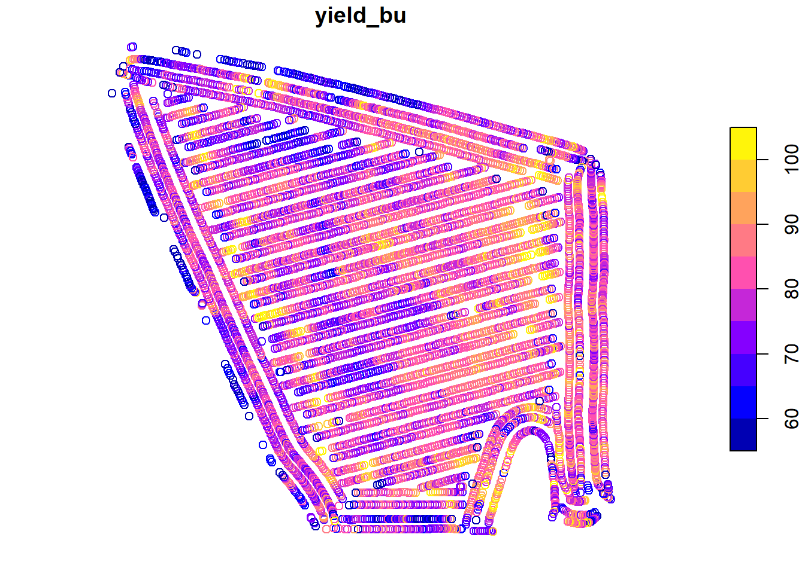

Chapter 2 Distributions and Probability
In this unit we will continue with the normal distribution model introduced in the previous unit. As you will recall, the normal distribution is a symmetrical curve that represents the frequency with which individuals with different particular measured values occur in a population.
The peak of the curve is located at the population mean, \(\mu\). The width of the curve reflects how spread out other individuals are from the mean. We learned three ways to measure this spread: the sum of squares, the variance, and the standard deviation. These statistics can roughly be thought of as representing the sums of the squared differences, the average of the squared distances, and the distances presented in the original units of measure. These four statistics – mean, sum of squares, variance, and standard deviation – are among the most important you will learn in this course.
2.1 Case Study
This week, we will continue to work with the Iowa soybean yield dataset introduced to us in Unit 1.
Here again is the structure of this dataset:
head(yield)## Simple feature collection with 6 features and 12 fields
## Geometry type: POINT
## Dimension: XY
## Bounding box: xmin: -93.15033 ymin: 41.66641 xmax: -93.15026 ymax: 41.66644
## Geodetic CRS: WGS 84
## DISTANCE SWATHWIDTH VRYIELDVOL Crop WetMass Moisture Time
## 1 0.9202733 5 57.38461 174 3443.652 0.00 9/19/2016 4:45:46 PM
## 2 2.6919269 5 55.88097 174 3353.411 0.00 9/19/2016 4:45:48 PM
## 3 2.6263101 5 80.83788 174 4851.075 0.00 9/19/2016 4:45:49 PM
## 4 2.7575437 5 71.76773 174 4306.777 6.22 9/19/2016 4:45:51 PM
## 5 2.3966513 5 91.03274 174 5462.851 12.22 9/19/2016 4:45:54 PM
## 6 3.1840529 5 65.59037 174 3951.056 13.33 9/19/2016 4:45:55 PM
## Heading VARIETY Elevation IsoTime yield_bu
## 1 300.1584 23A42 786.8470 2016-09-19T16:45:46.001Z 65.97034
## 2 303.6084 23A42 786.6140 2016-09-19T16:45:48.004Z 64.24158
## 3 304.3084 23A42 786.1416 2016-09-19T16:45:49.007Z 92.93246
## 4 306.2084 23A42 785.7381 2016-09-19T16:45:51.002Z 77.37348
## 5 309.2284 23A42 785.5937 2016-09-19T16:45:54.002Z 91.86380
## 6 309.7584 23A42 785.7512 2016-09-19T16:45:55.005Z 65.60115
## geometry
## 1 POINT (-93.15026 41.66641)
## 2 POINT (-93.15028 41.66641)
## 3 POINT (-93.15028 41.66642)
## 4 POINT (-93.1503 41.66642)
## 5 POINT (-93.15032 41.66644)
## 6 POINT (-93.15033 41.66644)And here is the map of the field:
library(sf)
plot(yield["yield_bu"])
2.2 The Normal Distribution Model
Mean, sum of squares, variance, and standard deviation are so important because they allow us to reconstruct the normal distribution model. Before we go further, what is a model? Is it frightening we are using that term already in the second chapter of this text???
Models can be very complex, but in there essence they all have the following in common: they are simplified representations of reality. No, that doesn’t mean that models are “fake” (SMH). It means that they summarize aspects of data, both measured and predicted. The normal distribution model describes the relationship between the values of individuals and how frequently they appear in the population. The model is useful because we can use it to approximately reconstruct the dataset at any time by knowing just two things about the original dataset – its mean and its standard deviation.
2.2.1 The Bell Curve
The normal distribution curve is often referred to as the bell curve, since it is taller in the middle and flared on either side. This shape reflects the tendency of measures within many populations to occur more frequently near the population mean than far from it. Why does this occur and how do we know this?
As agronomists, we can reflect on what it takes to produce a very good – or very bad crop. For a very good crop, many factors need to coincide: temperature, precipitation, soil texture, rate of nitrogen mineralization, proper seed singulation (spacing during planting), pest control, and hybrid or variety selection, to name just a few. In a typical season or within a field, we might optimize a few of these factors, but the possibility of optimizing every one is exceedingly rare. Thus, if we are measuring yield, measures near the mean yield will occur more frequently. Extremely high yields will occur less frequently.
Conversely, very low yields require we manage a crop very badly or that catastrophic weather conditions occur: a hailstorm, flood, or tornado. A frost at exactly the wrong time during seed germination or, in corn, excessive heat or a drought during pollination or grain fill. A planter box running out of seed or a fertilizer nozzle jamming. These things do occur, but less frequently.
The distribution of individuals around the mean is also a the result of measurement inaccuracies. Carl Friedrich Gauss, who introduced the normal distribution model, showed that it explained the variation among his repeated measurements of the position of stars in the sky. All measurements of continuous data (those that can be measured with a ruler, a scale, a graduated cylinder, or machine) have variation – we use the term accuracy to explain their variation around the population mean.
2.2.2 Distribution and Probability
Some areas of mathematics like geometry and algebra identify theorems: consistent, proven relationships between variables. In statistics, however, we typically solve for the probability that one or more variables are have a given value or range of values. To be more specific, most of the statistical tests we will learn can be reduced to the probability that a particular value is observed in a population. These probabilities include:
that a given value or mean is observed for a population; we calculate this using the normal distribution.
that the the difference between two treatments is not zero; we calculate this using a t-Test or Least Significant Difference test.
that a value will be observed in one variable, given a specific value of another variable; we calculate this using Linear Regression.
that the spread of individual measures in a population is better predicted by treatment differences than random variation; we calculate this using an F-test and Analysis of Variance)
Each of these probabilities is calculated from a distribution – the frequency with which individuals appear in a population. Another way of stating this is that probability is the proportion of individuals in a population that are expected to have values within a given range. Examples could include:
the proportion of individual soybean yield measurements, within one field, that are less than 65 bushels per acre
the proportion of individual corn fields that have an an average less than 160 bushels per acre
the proportion of trials in which the difference between two treatments was greater than zero
the proportion of observations in which the actual crop yield is greater than that predicted from a regression model
2.2.3 Probability and the Normal Distribution Curve
Probability can be calculated as the proportion of the area underneath the normal distribution that corresponds to a particular range of values. We can visualize this, but first we need to construct the normal distribution curve for our soybean field.
We need just two statistics to construct our distribution curve: the mean and standard deviation of our yield. In the last lesson, we learned how easily these both can be calculated in R:
library(muStat)
yield_mean = mean(yield$yield_bu)
yield_sd = stdev(yield$yield_bu, unbiased = FALSE)
# to see the value of yield_mean and yield_sd, we just run their names in our code
yield_mean## [1] 80.09084yield_sd## [1] 8.72252In this lesson’s exercise section, we will learn to use R to construct the distribution curve for any population, given the population mean and population standard deviation.
library(fastGraph)
plotDist("dnorm", yield_mean, yield_sd)
Let’s now shade the area underneath the normal curve corresponding to X values from 70 - 80. This area will represent the proportion of the population where individuals were measured to have values between 70 and 80 bushels. We will use a function in R called shadeDist to do this. You will learn more about this function this lesson in the exercise section.
shadeDist(xshade=c(70,80), ddist = "dnorm", yield_mean, yield_sd, lower.tail = FALSE)
Pretty cool, huh? The red area is the proportion of the soybean yield population that was between 70 and 80 bushels/acre. At the top of the output, shadeDist has also reported the proportion of the curve represented by that area, which it has labelled Probability. The probability in this case is 0.3722. What does that number mean?
The total area of the curve is 100%, or 1.0000. The proportion of the area under the curve that corresponds with yields from 70 to 80 bushels, then, is 37.22 percent of the area. This means that 37.22 percent of the individuals in our yield population had values from 70 and 80 bushels
But wait a second – why is R using the term Probability? Think of it this way. Imagine you sampled 1000 individuals from our population. If 37.22 percent of our individuals have values from 70 to 80 bushels, then about 37% of the individuals in your sample should have values from 70 to 80 bushels. In other words, there is a 37% probability that any individual you select, at random, from the population will have a value from 70 to 80 bushels.
Let’s test this. Let’s randomly sample 1000 individuals from our population. Then lets count the number of individuals that have yields between 70 and 80 bushels. For the curious, this is how we do this in R. We will run three lines of R code to do this:
First, use the
set.seed()function to specify a certain point in the population where R will begin sampling. R uses an algorithm to choose samples. This is not quite the same thing as random sampling – be setting a seed, we ensure that we can generate the same “random” set in the future should we need to. Our seed number can be any numeric value; in this case, the date this section was revised.Second, use the
samplefunction to randomly sample our population and return a vector of those numbers.Third, use the
subsetfunction to subset our data into those that meet logical conditions and return a dataframe or vector.Fourth, use the
lengthfunction to count the number of observations.
For everyone else, just understand this is how we came up with the sample of 1000 individuals.
# 1) set seed
set.seed(081521)
# 2) take sample
yield_sample = sample(yield$yield_bu, 1000)
# "yield_sample >=70 & yield_sample <=80 tells it to only include measures from 70 to 80 in the subset
# 3) Subset data into values between 70 and 80
yield_subset = subset(yield_sample, yield_sample >=70 & yield_sample <=80)
# 4) Count number of samples in subset
length(yield_subset)## [1] 353Our sample had 1000 individuals. 353, or 35.3%, were had yields between 70 and 80 bushels/acre.
Is the proportion predicted by the normal distribution curve exactly that of the actual population? No. The normal distribution curve is, after all, a model – it is an approximation of the actual population. In addition, our sample is a subset of the population, not a complete accounting.
We will talk more about sampling in the next unit.
2.3 The Z-Distribution
The relationship between probability and the normal distribution curve is based on the concept of the Z-distribution. In essence, the Z-distribution describes a normal distribution curve with a population mean of 0 and a standard deviation of 1.

The Z-distribution helps us understand how probability relates to standard deviation in a normal distribution, regardless of the nature of a study or its measurement units.
For example, the proportion of a population within one standard deviation of the mean is about 68 percent:
Similarly, the proportion of a population within 1.96 standard deviations of the mean is about 95 percent:

Conversely, the proportion of a population beyond 1.96 standard deviations from the mean is about 5 percent.

We refer to the upper and lower ends of the distribution as tails. In a normal distribution we would expect about 2.5% of observations to less than -1.96 standard deviations of the mean.

And 2.5% of the population to be more than +1.96 above the mean:

2.3.1 Important Numbers: 95% and 5%
Above we learned that 95% of a normal distribution is between 1.96 standard deviations of the mean, and that 5% of a normal distribution is outside this range. Perhaps these numbers sound familiar to you. Have you ever seen results presented with a 95% confidence interval? Have you ever read that two treatments were significantly different at the P=0.05 level?
For population statistics, the normal distribution is the origin of those numbers. As we get further into this course, we will learn about additional distributions – t and F – and the unique statistical tests they allow. But the concept will stay the same: identifying whether observed statistical values are more likely to occur (i.e., within the central 95% of values expected in a distribution), or whether the values are unusual (occurring in the remaining 5%).